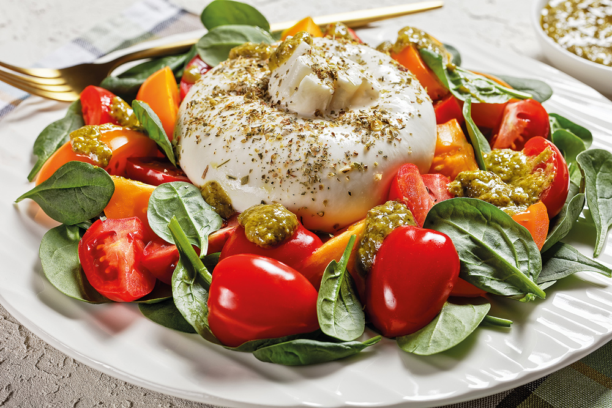
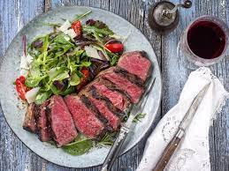
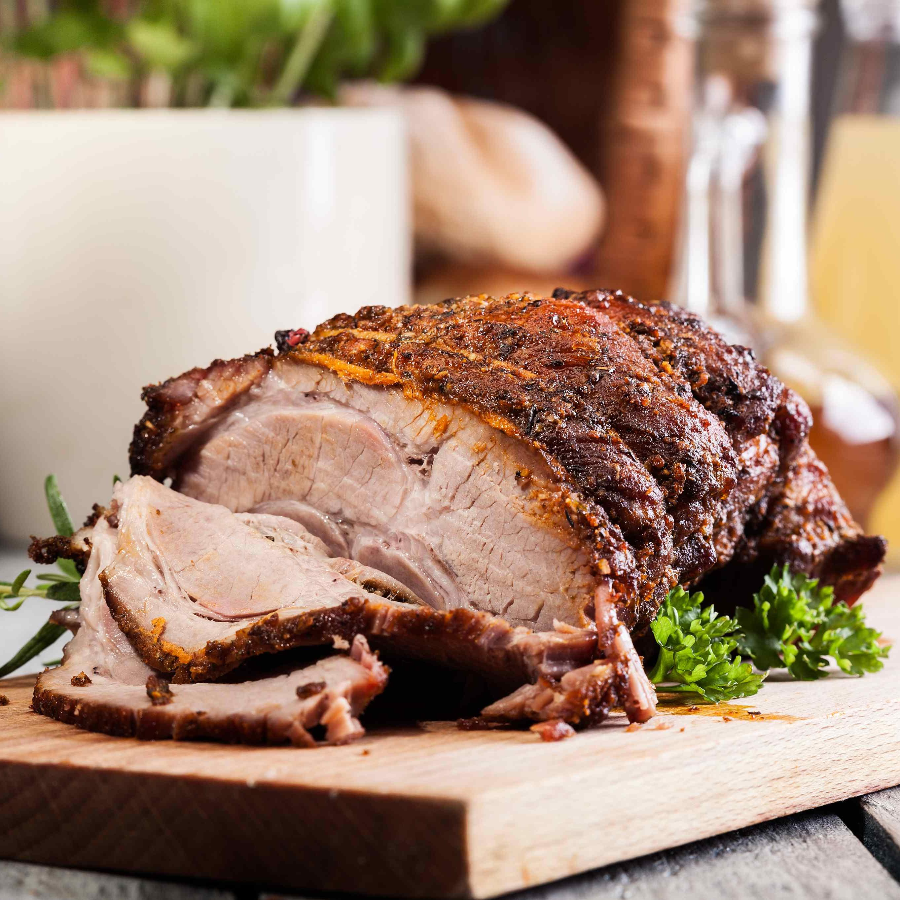
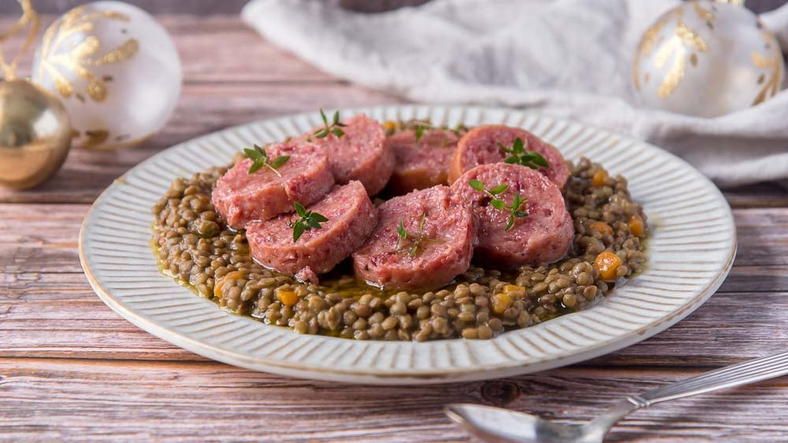
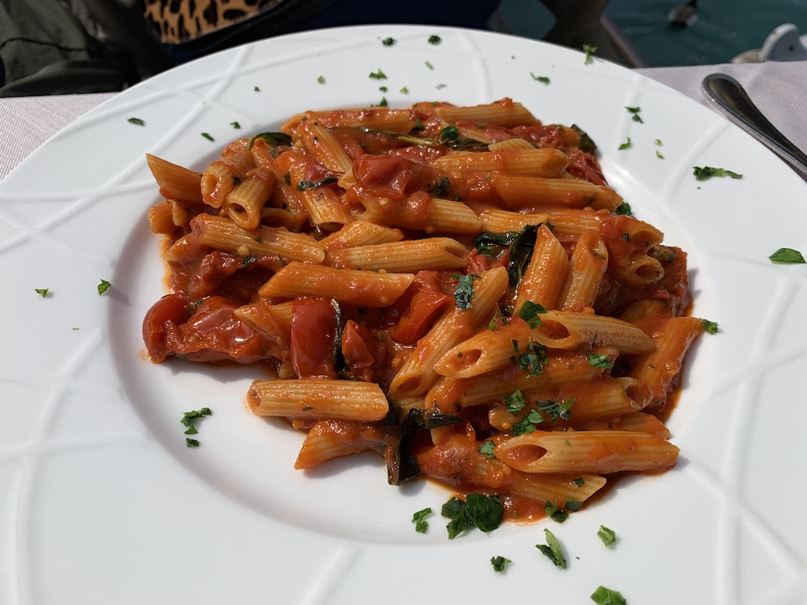
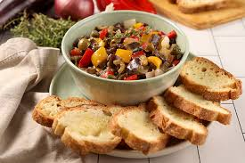
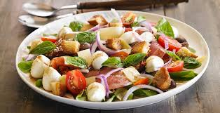
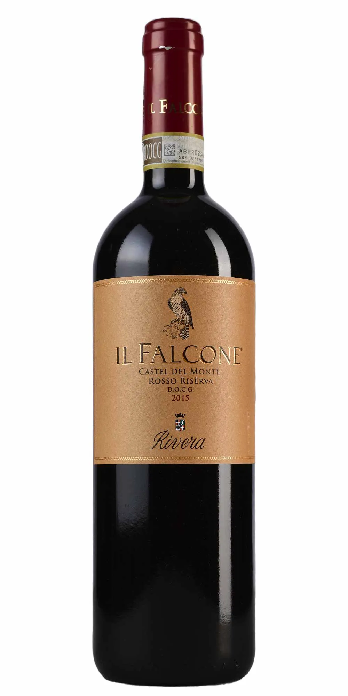

Nosso Menu
-
Burrata Caprese
Delicie-se com a Burrata Caprese: uma combinação irresistível de queijo burrata cremoso , tomates maduros, manjericão fresco e azeite de oliva extravirgem, uma verdadeira celebração dos sabores autênticos da Itália. -
Bruschetta
 Experimente a nossa Bruschetta: uma harmonia perfeita de pão crocante, tomates maduros em cubos, alho aromático, manjericão fresco e um toque de azeite de oliva extravirgem, uma explosão de sabores tradicionais da Itália em cada mordida
Experimente a nossa Bruschetta: uma harmonia perfeita de pão crocante, tomates maduros em cubos, alho aromático, manjericão fresco e um toque de azeite de oliva extravirgem, uma explosão de sabores tradicionais da Itália em cada mordida -
Saltimbocca
 O nome "saltimbocca" significa "salte na boca" e se refere à combinação deliciosa dos ingredientes. Você sabe quais são eles? A Saltimbocca é um prato romano composto por uma fatia fina de vitela ou frango coberto com presunto cru e sálvia. Tudo isso cozido em vinho branco.
O nome "saltimbocca" significa "salte na boca" e se refere à combinação deliciosa dos ingredientes. Você sabe quais são eles? A Saltimbocca é um prato romano composto por uma fatia fina de vitela ou frango coberto com presunto cru e sálvia. Tudo isso cozido em vinho branco. -
Tagliata di Manzo
Experimente a elegância da Tagliata di Manzo, filé de carne bovina grelhado e fatiado finamente, servido sobre rúcula fresca com lascas de parmesão e um toque de azeite de oliva extra virgem. Uma combinação simples e sofisticada de sabores italianos autênticos. -
Lombo
Desfrute do nosso Lombo Assado Italiano, um prato suculento e aromático, preparado com lombo de porco ou vitela marinado em ervas frescas e assado até a perfeição. Uma explosão de sabores italianos em cada mordida! -
Cotechino con Lenticchie
Desfrute de uma autêntica especialidade italiana com nosso Cotechino con Lenticchie. Deliciosa salsicha de carne suína temperada, cozida lentamente e servida com lentilhas saborosas. Um prato tradicionalmente servido no Ano Novo para trazer sorte e prosperidade. -
Spaghetti al Sugo di Pomodoro
Saboreie a simplicidade e o frescor do nosso Spaghetti al Sugo di Pomodoro. Este clássico da culinária italiana é feito com spaghetti al dente e um molho de tomate caseiro, preparado com tomates maduros, alho, manjericão fresco e um toque de azeite de oliva extra virgem. Perfeito em sua simplicidade, este prato celebra os sabores puros e autênticos da Itália. -
Spaghetti alla Carbonara
 Desfrute do autêntico sabor italiano com o nosso delicioso Spaghetti alla Carbonara. Preparado com spaghetti al dente, guanciale crocante, ovos frescos, queijo pecorino romano e uma pitada de pimenta-do-reino moída na hora, este prato clássico é a combinação perfeita de simplicidade e sabor
Desfrute do autêntico sabor italiano com o nosso delicioso Spaghetti alla Carbonara. Preparado com spaghetti al dente, guanciale crocante, ovos frescos, queijo pecorino romano e uma pitada de pimenta-do-reino moída na hora, este prato clássico é a combinação perfeita de simplicidade e sabor -
Caponata
Explore a Caponata: uma sinfonia de sabores mediterrâneos que combinam berinjela macia, tomates suculentos, azeitonas salgadas, cebola dourada, alho perfumado e vinagre balsâmico, tudo harmonizado com ervas frescas e um toque de doçura. Uma experiência gastronômica que transporta você diretamente para as encantadoras ruas da Sicília. -
Panzanella
Delicie-se com a Panzanella: uma explosão de cores e sabores da Toscana. Este prato encantador une o crocante do pão toscano, tomates maduros, pepinos frescos, cebola roxa e manjericão perfumado, tudo regado com azeite de oliva extravirgem e vinagre balsâmico. Cada garfada é uma jornada pelos campos ensolarados da Itália, onde os ingredientes frescos celebram a simplicidade e a tradição culinária. -
Il Falcone
Saboreie o Vinho Falcone: Uma ode à elegância e à sofisticação, este vinho de 2015 é um verdadeiro deleite para os sentidos. Com notas sutis e complexas, este vinho revela uma harmonia entre frutas maduras, taninos suaves e uma acidez equilibrada. Cada gole é uma experiência refinada que cativa o paladar, convidando você a apreciar cada momento com requinte e prazer. -
Água Fiji
Desfrute da Água Fiji: Uma indulgência pura e refrescante que vem das profundezas intocadas das ilhas Fiji. Cada gota desta água cristalina é uma celebração da natureza intocada, enriquecida com minerais essenciais e um sabor suave e equilibrado. Deixe-se levar por sua pureza incomparável e sinta a revigoração que só a Água Fiji pode proporcionar. -
Tiramisu
 Saboreie o Tiramisu: Uma tentação irresistível que captura a essência da culinária italiana. Camadas de biscoitos embebidos em café espresso, creme de queijo mascarpone delicadamente batido, e um toque sutil de cacau em pó, criando uma experiência decadente e reconfortante.
Saboreie o Tiramisu: Uma tentação irresistível que captura a essência da culinária italiana. Camadas de biscoitos embebidos em café espresso, creme de queijo mascarpone delicadamente batido, e um toque sutil de cacau em pó, criando uma experiência decadente e reconfortante. -
Panna Cotta
 Delicie-se com a Panna Cotta: Uma indulgência sedosa e luxuosa que captura a essência da sofisticação italiana. Esta sobremesa clássica apresenta um delicado creme de leite infundido com baunilha, resultando em uma textura cremosa e um sabor suave e delicado. Decorada com uma generosa porção de calda de frutas vermelhas ou caramelo.
Delicie-se com a Panna Cotta: Uma indulgência sedosa e luxuosa que captura a essência da sofisticação italiana. Esta sobremesa clássica apresenta um delicado creme de leite infundido com baunilha, resultando em uma textura cremosa e um sabor suave e delicado. Decorada com uma generosa porção de calda de frutas vermelhas ou caramelo.